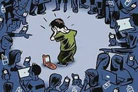

La disinformazione dell'informazione!
Un'analisi multidisciplinare sulle opportunità e i rischi della vita in rete: la cittadinanza digitale attiva alla luce dell'etica dell'informazione.
Introduzione al percorso
Trascorriamo online buona parte della nostra giornata, eppure quasi nessuno ci ha mai insegnato a starci. Per il percorso di Educazione Civica ho scelto la cittadinanza digitale: cosa significa partecipare alla vita pubblica in rete in modo consapevole, e cosa accade quando questa consapevolezza manca — dal cyberbullismo alla disinformazione, fino all'uso disinvolto dei nostri dati personali.
Cos'è la cittadinanza digitale
Essere cittadini digitali significa partecipare in modo attivo, consapevole e responsabile alla vita della società attraverso gli strumenti digitali. Implica conoscere i propri diritti (alla privacy, all'oblio, alla protezione dei dati personali) e i propri doveri (rispetto degli altri, attendibilità delle informazioni che si condividono, uso etico delle tecnologie). La cittadinanza digitale non è un concetto astratto: si esercita ogni volta che pubblichiamo un post, che chiediamo un'informazione a un assistente vocale, che usiamo una carta di credito online.
Il cyberbullismo
Il cyberbullismo è una delle forme più insidiose di violenza che la rete ha reso possibile. A differenza del bullismo tradizionale, agisce 24 ore su 24, può raggiungere un pubblico potenzialmente illimitato, e spesso si nasconde dietro l'anonimato. Le forme più comuni includono insulti ripetuti tramite messaggi, diffusione non consensuale di immagini, esclusione sistematica dai gruppi online e creazione di profili falsi per danneggiare la reputazione di qualcuno. In Italia, la legge 71/2017 è stata la prima in Europa a contrastare specificamente il cyberbullismo.

Privacy e protezione dei dati
Ogni clic, ogni ricerca, ogni "mi piace" lascia una traccia. Il Regolamento Generale sulla Protezione dei Dati (GDPR), entrato in vigore in tutta l'Unione Europea nel 2018, ha rappresentato un passo fondamentale per restituire alle persone il controllo sui propri dati personali. Capire concetti come consenso informato, diritto all'oblio, data breach e profilazione è oggi una competenza di base, esattamente come saper leggere un contratto.
Disinformazione e pensiero critico
Le fake news non sono un'invenzione di oggi, ma i social network le hanno trasformate in un fenomeno di massa. Riconoscere una notizia falsa richiede tempo, strumenti e abitudini mentali che vanno coltivate: verificare la fonte, confrontare più testate affidabili, diffidare dei titoli "acchiappa-click", fare attenzione a immagini e video manipolati (deep fake). La scuola e la famiglia hanno un ruolo fondamentale nell'educare al pensiero critico digitale.
Conclusione del percorso
La cittadinanza digitale non è una questione tecnica, ma una questione di responsabilità. Le competenze tecnologiche che acquisiamo a scuola hanno senso solo se accompagnate da una bussola etica: la rete può essere un luogo straordinario di crescita e di incontro, ma solo se ognuno di noi sceglie di esserci con rispetto, onestà e consapevolezza. Il mio percorso scolastico in Informatica mi ha dato gli strumenti per comprendere come funziona la tecnologia: ora sta a me, e a tutti i miei coetanei, decidere come usarla.